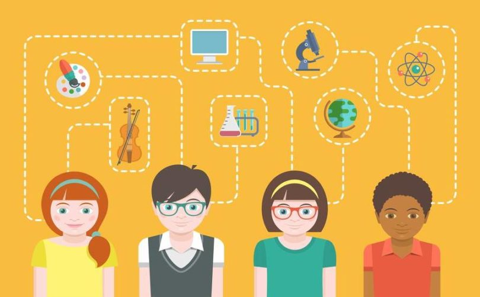

Ориентированность на будущее
Ориентированность на будущее - это одна из главных возрастных особенностей подростков, которая влияет на
их профессиональное самоопределение. В данный возрастной период многие подростки начинают задумываться о своем
будущем, о выборе дальнейшего университета или колледжа и, конечно, о профессиональных планах.
Подросток в этом возрасте активно изучает то, какие профессии существуют, составляет жизненный план, в
процессе создания которого решает вопрос кем ему быть (профессиональноесамоопределение) и каким быть
(личностное самоопределение).